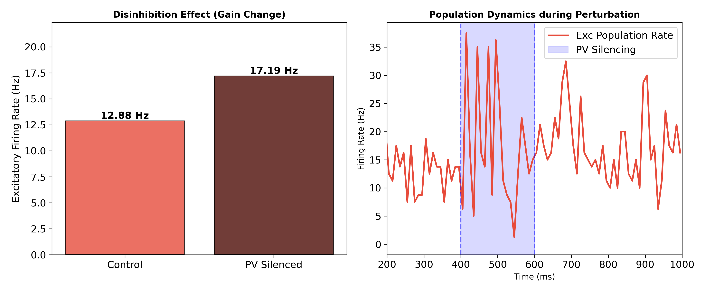
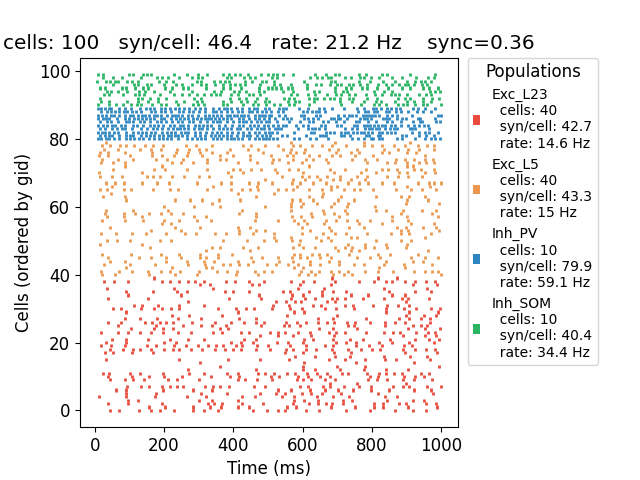
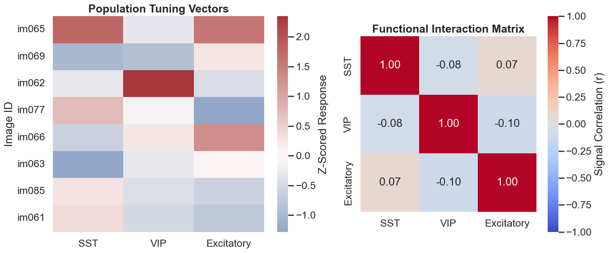
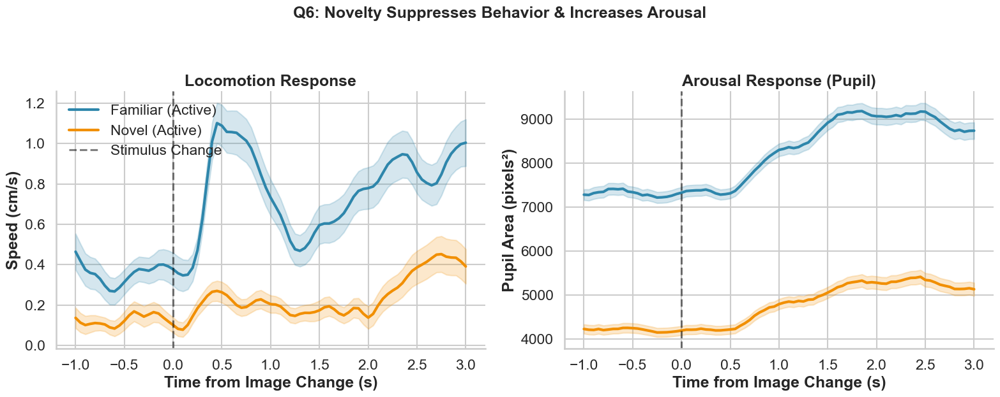

research projects
exploration of cortical microcircuits and inhibitory stabilized networks (isn).
this project investigates the dynamics of cortical networks and the role of
inhibition in maintaining stability. 2025
view project
view project


some of my previous projects were deleted
and re-uploaded in a single 'computational-neuroscience-projects'
repository. this repo includes three basic, small projects exploring
neural dynamics, spectral analysis, and visual/behavior coding (allen institute, visual behavior optical physiology dataset) using various
computational methods. 2024 - 2025
view project
view project

